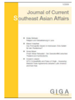

收录于合集

简 介
【 作者 】Gabriele Giovannini ，诺桑比亚大学国际关系博士。现为意大利都灵大学博士后研究员和都灵世界事务研究所研究员。
【 文章来源 】Journal of Current Southeast Asian Affairs，Vol 37, No 2，February 2018, Pages 63–93。
【期刊介绍】 Journal of Current Southeast Asian Affairs，于1982年首次出版，由Südostasien aktuell出版，由GIGA亚洲研究所（GIGA Institut für Asien -Studien）编辑。该期刊每年出版三次，是GIGA 德国全球和区域问题研究所的GIGA期刊系列的一部分。该期刊涵盖的主题包括：东南亚地区的政治、经济、社会、文化、东南亚的发展以及区域组织等。

【期刊网址】
https://journals.sub.uni-hamburg.de/giga/jsaa/index
【编译】 彭小朵
【校对】 庞林立
【提纲】
摘要
政策背景：湄公河是老挝“东南亚蓄电池”政策的重点发展资源
老挝——越南关于沙耶武里水坝建设的谈判
谈判分析：是什么因素阻止了越南的强烈反应？
沙耶武里水坝案例的相关权力分析
结语
简介
沙耶武里水坝位于湄公河下游的主流上，由老挝主持建造。老挝与越南曾对此展开了多次谈判。越南明确反对建设沙耶武里水坝，老挝如何继续推进该项迄今仍完全未知。本文首先阐述老挝水电开发相关的政策，确定了水坝规划的国内环境。其次系统梳理老挝与越南之间的谈判，主要是在双边和多边层面分析这一过程。再次，总结了前文的相关材料，探究地缘政治因素在谈判过程中如何发挥作用。最后做出总结，即其他国家在沙耶武里水坝谈判中存在自身考量，并对最终结果产生影响。然而，鉴于这种影响并不是单向存在的，即泰国和中国支持老挝，美国与越南（和柬埔寨）一致反对，老挝政府利用这种影响，将其转化为对自身有利的竞争因素。
政策背景：湄公河是老挝“东南亚蓄电池”政策的重点发展资源
由于地理位置与自然条件等优势，老挝具有发展水利资源的潜力。老挝政府基于发展水电的利益考量以及提高国家出口能力和吸引外汇的目的，将相关政策概念化，制定出一项在未来几十年时间里，将自己打造为“东南亚蓄电池”的国家战略。老挝政府计划利用湄公河的巨大潜力，打造一个由9个主流水坝组成的级联，这些水坝一旦投入运行，将对老挝政府将产生巨大的经济意义。沙耶武里水坝是湄公河下游的第一个正在建设中的主流水电设施。因此老挝政府试图借此挖掘湄公河的潜力，增加出口，改善经济，将湄公河发展为经济走廊。
老挝 —越南关于 沙 耶武里 水坝建设的 谈判
**
**
**** 在这一部分，作者在多边与双边层面上对老挝——越南的谈判进行梳理。 第一阶段：湄公河委员会（ Mekong River Commission ，MRC ）内部的多边谈判。 2010年10月22日，湄公河委员会关于沙耶武里水坝的谈判正式开始。越南在有关文件中明确表明了沙耶武里水坝将对湄公河水文以及生态造成的影响，而且将影响越南等下游国家的水安全与食品安全。在随后举办的湄公河委员会特别会议中，老挝、越南、泰国与柬埔寨无法就相关事宜达成妥协，有关国家甚至要求此项目暂停10年，以便对环境风险进行全面评估。在湄公河委员会其他成员国的反对意见下，老挝政府同意进一步地评估沙耶武里水坝的环境影响。 第二阶段：政府层面的谈判。 在湄公河内部关于沙耶武里水坝的谈判遇挫，但是老挝政府并没有就此放弃该项目。在第18届东盟峰会结束后不久，老挝政府便与泰国开发商达成协议，就采购、施工等方面达成协议。对此，越南与柬埔寨表示强烈抗议，要求老挝政府停止推进项目。然而，在2012年俄罗斯APEC峰会上，越南总统提及了“关于湄公河可持续利用和开发的研究，包括水力发电水坝对主流的影响等”，但是并没提及老挝政府和沙耶武里水坝。2012年12月7日，沙耶武里水坝奠基仪式举办，邻国代表出席了此次活动，其中包括越南大使。沙耶武里水坝对老挝和越南的关系产生了很大的影响，甚至是对双边关系的一大考验。
谈判分析 ：是什么因素阻止了越南的强烈反应？
**
**
在这一部分中，作者主要探讨老挝 ——越南谈判过程中，地缘政治因素的影响和作用。地缘政治因素的影响： 第一，泰国明确支持老挝建设 沙耶武里水坝 ，因为它将从中 获益匪浅。 首先，由于泰国国内“反水电”呼声高涨以及内部资源已被开发利用，泰国政府产生“水电生产国际化”的想法；其次，由于依赖从缅甸进口天然气用于发电，泰国特别重视能源结构多样化。因而在老挝——越南因沙耶武里水坝产生意见分歧时，泰国给予老挝直接支持 。其次，中国出于经济目标，对 沙耶武里水坝 也持支持态度。 尽管中国在该项目中并没有任何股份，但是沙耶武里水坝项目作为湄公河下游设想的主流水电梯级中的第一个，对于启动实施其他规划的水坝至关重要，事关中国在该区域的经济利益诉求。 再者，美国对 沙耶武里水坝项目 的态度与越南一样，反对该项目的建设。 美国的反对意见即可以看作为支持其在东南亚地区重要的合作伙伴——越南，也可以视作抗击中国在该地区的经济意图。
沙耶武里水坝 案例的相关权力分析
沙耶武里水坝谈判过程中，尽管老挝与越南之间构成不对称的双边关系，但是事态似乎是朝着有利于老挝的方向发展。因此作者在这一部分建立分析框架来测试这一结果，并观察相关权力是否发生了变化。 一、 偏好评估 ， 根据前文的分析，作者得出一个结论：沙耶武里水坝使得老挝（A）让越南(B)做一些它本不愿意的事情。根据达尔对权力的定义，这意味着沙耶武里水坝作为一个独立变量对老挝与越南的双边关系中的相关权力产生了积极影响。老挝和越南在同一问题上存在明显的偏好差异，导致权力在其中发挥作用，同时使得“建立因果关系的可能性”得以加强。 二、 权力条件 ， 无可置疑的是，老挝政府对沙耶武里水坝项目的坚持是导致权力条款发生变化的关键因素。换句话说，水坝的建设与越南的利益与偏好背道而驰，但却符合老挝的利益诉求。在此情况下，老挝决定实施该项目，并不断推进，迫使越南接受现实。 三、 权力形式 ，在由相反的利益组成的权力关系中， 权力将采取硬实力的形式，而强制将是最重要的 使用 工具。 尽管越南对沙耶武里水坝存在不同意见，但越南不得不被迫接受老挝单方面决定继续建设水坝的既成事实。然而，尽管越南曾试图改变老挝的计划，但出于地缘政治因素的限制，进一步地反对老挝的水坝建设计划在战略上是不可行的。因此，越南被迫接受沙耶武里水坝的修建，以避免未来有可能产生的更加严重的后果。
结语
**
**
考虑到建设沙耶武里水坝带来的经济效益与对越南造成的风险以及成本花费，老挝对越谈判取得了明显成功。作者强调，地缘政治因素限制越南发挥杠杆作用，以及采取相关措施阻止老挝继续建设水坝中发挥了重要作用。事实上，分析更广泛的地缘政治背景与老挝和越南之间关于沙耶武里水坝的双边不对称谈判交织在一起，这表明其他国家在此事件中存在直接或间接的利益，从而对最终结果产生影响。然而，鉴于这种影响并不是单向存在的，即泰国和中国支持老挝，但美国与越南（和柬埔寨）一致反对。老挝政府利用多个行为体参与谈判，为自身争取到了多样化的外交资源，并将其转化为对老挝有利的竞争因素。
点击左下角“ 阅读原文 ”获取原文pdf版
声明
此文为国政学人微信公众平台外文编译系列文章之一，由国政学人编辑首发，不代表本平台观点。欢迎转发分享，转载请务必注明来源。如有问题，请联系guozhengxueren@163.com
更多阅读
国政学人 （ID：guozhengxueren)
为方便学人及时阅读高质量文章
别忘把国政学人设置 星标 哦~